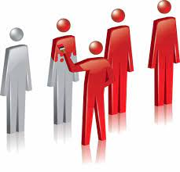
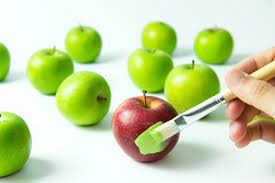
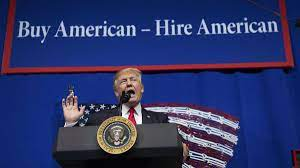
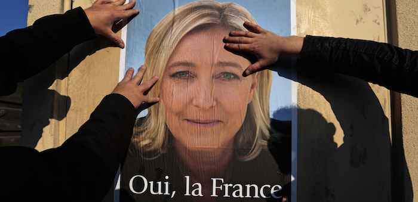

Assimilation
One reason why so many people are against immigrants, legal or ilegal is because they feel their culture and traditions are being threatened by them.
Assimilation is a way in which the process of integrating an ethno cultural, like immigrants, ethic groups, minorities and more, into a bigger or dominating culture, inside what is established common.

It causes rise to racism in societies for it means that people that immigrate to another country with hopes to be treated like a human with rights and respect, (the bare minimum) has to assimilate. They’ll have to leave behind their culture and tradition and sometimes even religion to take up those of the one’s around them.
Of course, they’ll have to begin by the language. Immigrants have always been expected to learn their new country’s language if they hope to fit in. And, yes, one would expect them to learn the country's language someday but until then their rights, living conditions, and opportunities should not depend on that. Not to mention that depending on one's native language, some people still have an accent or a way of pronunciation that will always identify them like outsiders to be targeted.

Those on Power
We’ve had and still have a lot of politics that have reached or are in their way to reach the maximum power where they have and will keep making history regarding immigration.
One of those we have that have already left their is:
Donald Trump

One of Trump’s main promises while campaigning was to build a beautiful wall that would keep any other than an American, a true American outside The Great America he was so sure he could achieve. It was started even though a lot of experts in the field, meaning not him, were concerned that the wall would be expensive, difficult to construct, ineffective in deterring illegal immigration, harmful to the border, offensive to personal poverty rights and a threat to the economic and social well being of the border communities. Of course, with the wall, the number of agents in border patrol increased drastically, which was not justified in the executive order. And the cost of the wall wasn’t either though we know that the millions that it cost would end up going to private detention companies.
One we have out of those who are still with us looking for their opening to do something (whether we like it or not) we have:
Marie Le Pen

The policies I represent are the policies represented by Mr Trump [and] Mr Putin”.
She’s been competing against Emmanuel Macron for a few years now for the position of President in France. This year she came close in behind him and lost by very little. Which is concerning, because as we already know she share’s ideologies with the exact men one would not want to share breath. One of Le Pen’s most know fact regarding politics is her view of islamShe has always been very vocal of her views about them.
In a 2017 interview, Le Pen “I’m opposed to wearing headscarves in public places. That’s not France. There’s something I just don’t understand: The people who come to France, why would they want to change France, to live in France the same way they lived back home?”
A multicultural society is a society that has multiple conflicts.”
And there’s a lot more. But I don't think I need to say anything more for us to understand her views and beliefs. Which is “FRANCE how I want it to be, 100% french. Anything else would stain the country.”
Helping
Learning and acknowledging a problem is a great first step toward helping, fixing, or even preventing such event from happening. Here are some great resources to learn and help.
Amnesty International, an organization dedicated to human rights all around the world. You can read what's happening all over the world and help donating or volunteering.
Learn More Here
The book The Lines We Cross By Randa Abdel-Fatttah
Go Back Up
Reference
https://watson.brown.edu/costsofwar/costs/human/refugees
https://www.bbc.com/news/world-60555472
ttps://cmsny.org/trumps-executive-orders-immigration-refugees/
11 of Marie Le Pen's most controversial quotes
By Keira L. Vélez
(Last updated May 28,22)